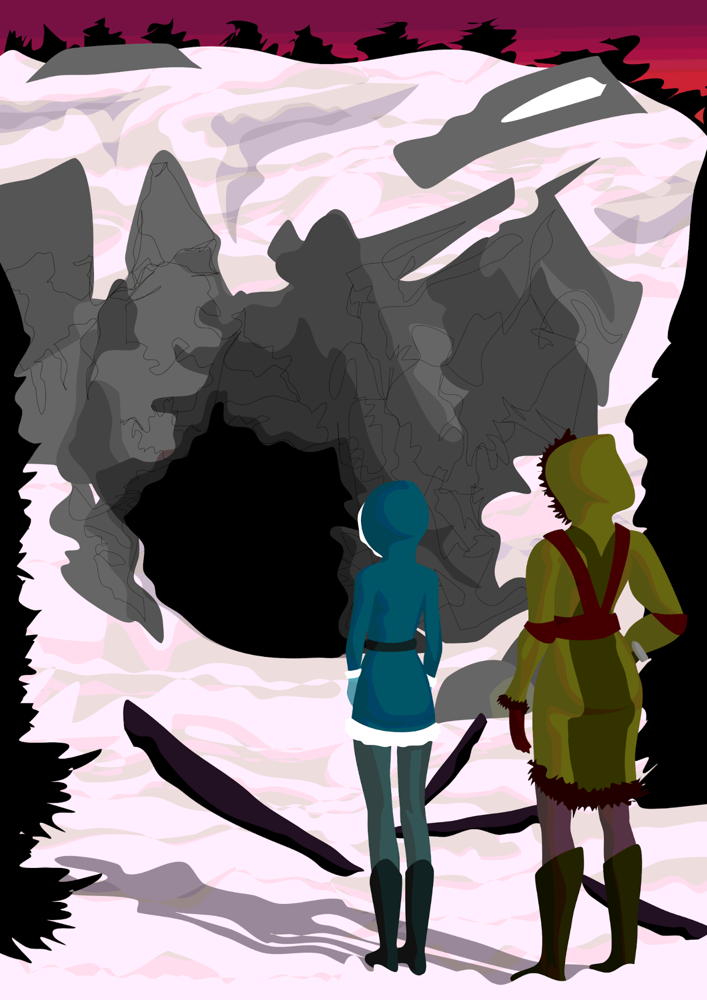
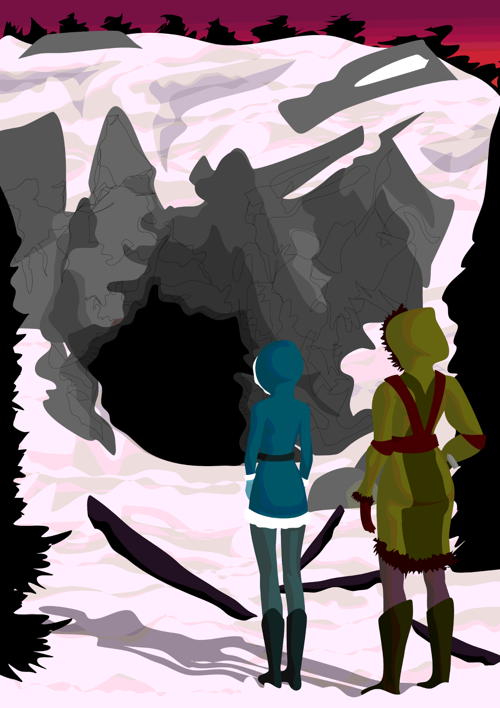

EXT. UNKNOWN MOUNTAINSIDE - DAWN
We are confronted with the rubble of a large, burnt home on a strange, snowy mountain side. We can tell from a still-standing, scorched fireplace that the home was a multi-story home, but the upper floors have collapsed during the fire. The trees in the area are reminiscent of pines, but with fan-like needles so dark they look black and pale, birch-like bark. Mixed in amongst the pines are bramble bushes with black speckled, deep crimson, needle like leaves. The sky is a deep, reddish purple. Smoke still rises weakly from the ashes. The area around the home is completely silent.
Around the rubble of the large home, a mixture of ash and snow slowly flutters down to the open interior, and scalded exterior. As the snowflakes make contact with the still smoldering interior of the home, they dramatically melt with a hiss.
NARRATOR
Few materials in this universe can resist the damage caused by infernos of this intensity.
Our view enters the home, passing across the damaged interior.
We see the remnants of a metal table and chairs: the finer details of which have melted, and some of which is buried by fallen, charred rubble.
NARRATOR
For this reason, fires remain one of our greatest natural enemies. They are silent, quick, and oftentimes unnoticed destroyers.
They destroy our records, all evidence, all our knowledge...
We pass across the remnants of a sealed bookcase, the glass of which has exploded into pieces, scattered on the floor before the shelf. Inside the case sits ash, which slowly wisps away, along the metallic bookbindings.
NARRATOR
They consume our possessions, and our safest of places
We pass across a bent metal bed frame, the footboard of which has been broken from the main frame. The metal springs of a strange mattress still sits atop the frame.
At this point, the snow transitions to a sleet.
NARRATOR
They know no limit. Hold no mercy. Are, simply put, unpredictable.
We pass across the metal frame of an empty crib, which lays on its side near the bed. Burnt plastic coats the metal frame, and melts down towards the floor.
NARRATOR
Worst of all, the things that survive them are forever scarred. Doomed to rust sooner than they would have otherwise.
We transition to a partially collapsed brick room, where we find a burnt bike of sorts with a strange profile. The wheels of the bike have exploded, their treads scattered near the bike. As we examine the bike’s metallic surface, we see that the metal has begun to tarnish in the cool, wet air.
NARRATOR
But without fire and its subsequent heat...
We arrive at the second floor scorched fireplace, focusing on the opening, which is no longer accessible as the second floor has collapsed. We move backward from the fireplace, seeing more and more of the cloudy, mountainous landscape beyond the smokey haze of the burnt home.
NARRATOR
How would we persevere through the coldests of nights in the unending, harsh wilds of our universe?
We return to the entire exterior of the scorched home, seeing that the sky has lightened significantly, turning almost orange in color now.
NARRATOR
Fire is unpredictable: breathing the duality of being our greatest natural enemy, and our greatest natural savior.
At the mouth of the cave, the smoke may blind us, but above it all we hear the flames coaxing roar…
FADE OUT:
NARRATOR
Stories of sorrow, perseverance, or survival rarely have a true beginning from which we can start. More often than not, they begin in the midst of a typical life, as it pushes on through space and time without reason, or oftentimes cause, and rarely any warning. For this reason, and for the sake of our dear survivors, I think it only fair to begin their story in such a place in time...
INT. FLEET TRANSPORTER HEADED TO HRDF-1 - MORNING
We find ourselves in a spaceship bay, which is populated with several rows of seats. The cargo bay is dusty, dingy, and brightly, almost toxically, lit.
VOLI IVE-RETAS OF ALTAS-MINAS He is a 25 sols old rust-water sel from the outer-system planet of Altas-Minas. | HEZEK OF ALTAS-MINAS He is a 29 sols old land-colonist sel from the outer-system planet of Altas-Minas. |
Hezek and Voli stand together towards the front of the ship bay on the fleet transporter. Some other land-colonists (landers) stand in the transporter with them, but because the ship is so lightly populated, they maintain a fair distance from one another, forming small groups of 2 or 3 individuals.
NARRATOR
We begin on a Soli fleet transporter. It is, for the most part, a very typical transporter, doing a very common job, on a very average cycle. This transporter has just begun its approximately cycle-long journey of collecting new recruits for the Soli fleet. These recruits will spend the next two sols of their lives on a planet referred to as HRDF-1: short for Human/Risonoid world 1. This planet, a small planet in the inner system of Helio-Rae, is a highly populated planet.
Unlike Altas-Minas, this transporter’s current stop, HRDF-1 is not a resource colony. It’s really not a colony by any stretch of the imagination; it is a civilized, ever growing, metropolis dedicated to the collection of civilization in the known blob and, ultimately, to the training of those who serve this collection of civilizations during the current war time referred to aptly as the Great Exile.
The Soli, along with its sister species the Terren and Rison, are a dying species. Though they were the blob’s strongest of children, soon the known blob would no longer house their kind. Their numbers had dwindled significantly during the dark revelations brought about by the False War the previous war-time, and genetic warfare of the rust-waters. Despite this, they still dedicated themselves to an important purpose in this blob during the Great Exile: assisting with the protection of the blob, and the eventual passage of it to the younger species which populated it (Laerets, Matiran, and Humans).
Returning to our story, this transporter has just arrived in Tres’Valinas, a long, troubled, and lawless mining settlement on the Altas-Minas equator. This transporter, which is arranged to only pick up sole, has just two pickups: a sel by the name of Hezek, and another sel by the name of Voli.
We transition closer to HEZEK and VOLI as they examine the other occupants
NARRATOR
Hezek, the shortest and eldest of the two, was a long suspected terren/soli hybrid on Tres’Valinas. Though not an illegal hybrid, Hezek, for most of his life, was considered a second-class mutt. A dirty, unfortunate, and disgusting hybrid to the rugged inhabitants of Tres’Valinas. Terrens and Soli, you see, were not encouraged to cross-breed with one another any longer. Their cross breeding would only further accelerate, and subsequently doom, the two sister species’s series of manufactured genetic defects known as rust-water mutations. We’ll certainly discuss these mutations more another time…
But apparently, despite years of ridicule, hatred, and societal neglect, Hezek’s blood test had confirmed his full Soli parentage. He would not have been selected for recruitment by the Soli fleet, if it hadn’t.
Meanwhile, his ally and compatriot, Voli (the taller of the two) was a prime example of a male rust-water mutant. Though breyline overabundance (exhibited by his crystalline subdermal markings) was not unnatural amongst soli males (albeit certainly rare anymore), breyline overabundance to the extent at which Voli exhibited was very much a rust-water mutation. For this reason, though most overabundant males on land-colonies were considered ‘diadems-of-their-breed’, Voli was… not.
Although Voli did not nearly repulse the Soli of Tres’Valinas as much as Hezek did, Voli and Hezek shared similar frustrations of being outsiders. Because of this, they had grown friendly with one another, and had subsequently applied to the fleet in unison. By consequence, they were also recruited by the fleet… in unison. Though they suspected that Voli’s advanced abilities would eventually separate them, the friends carried on as if this pick-up marked a new, promising era in their alliance.
HEZEK looking over at the transporter door, nudges VOLI.
NARRATOR
Voli and Hezek were the only sole who had applied, and been recruited, on Tres’Valinas. Despite this, there was another ‘pickup’ that cycle by the male transporter.
ELA ALANAS OF ALTAS-MINAS, She is a 20 sols old rust-water land-colonist solene from the outer-system planet of Altas-Minas. |
ELA sneaks into the male fleet transporter when no one is looking. She wears a unique set of heavy armor, made from oxidized iron, with some additional metal salvage on it, to give her a bulky, frightening appearance. Across the chest of her armor is a large blue ‘X’ which is both carved and painted onto the chest.
NARRATOR
Though selected for Soli fleet duty as well, Ela Alanas was not supposed to be on this transporter. She was a sterile solene and therefore technically allowed to be in male only areas, but her birth sex was female. For this reason, she was supposed to be on the female only transporter. However, because of a very long, tumultuous history of serving as a Seledesa guardian. During which time she had angered and slaughtered members of the populace of soleen of Tres’Valinas, it was for her own personal safety that she instead occupied this transporter.
VOLI and HEZEK acknowledge ELA.
NARRATOR
Voli, who knew a lot about Ela, but honestly had no opinion either way about her beyond that she was as gifted as he was, greets her cautiously. Hezek, who also knew Ela from afar, but found her unsettling, does not greet her.
Ela was somewhat familiar with them as well, through the natural process of developing with her former guardians a mental list of threats and neutral parties. But being an obligate lone-wolf these days, Ela made no indication that she had noticed their greeting.
ELA grabs a seat on a bench in the transporter, not looking at HEZEK or VOLI. They look away from her.
NARRATOR
The next few hours of our story are fairly uneventful…
The transporter continues its path, collecting more and more new recruits in the land-colonies...
We slowly see the transporter fill with additional land dwellers until it is nearly full. We can tell that time is passing quickly as HEZEK and VOLI shift from different seats throughout the transporter.
ELA stays in her spot, eventually bringing her legs up and crossing them on the seat. We notice that most of the males avoid sitting near her… entirely.
NARRATOR
But as the transporter grows closer to HRDF-1, and begins to join with comrade transporters that are servicing inner system stations, the ship makes its first stop on a Soli station. Though it has no intention of picking up more recruits, and instead stops simply to refill its fuel sources, it does pick up one individual by complete accident...
ZAK ILCAEUS-ZACEL OF He is a 38 sols old trained medical soli-stationer from Breva station. |
At this point, ZAK enters the ship. He looks very tired, with visible bags under his eyes. He looks about the transporter for a seat.
Several others look back at him, watching him. We can tell that he grows uncomfortable as he looks around. But upon spotting Ela, who does not look at him, he takes a small relieved breath.
ZAK walks over and sits beside her.
NARRATOR
An exhausted stationer by the name of Zak, knowing no better, makes a fatefully terrible decision when he resigns himself to occupying this transporter; This transporter, which is filled to the brim with land-colonists -a people who despise his type, and view him and his kind as resource hoarding, inbreds- is certainly no place for him to be.
But, by a strange dalliance of fate, or the instinct an animal might feel when near its kind, Zak chooses to sit beside the one person in this ship who is as equally unwanted as he is. Thinking Ela, who keeps her face lowered, is a normal (albeit short) sel with perhaps little interest in speaking to others, Zak eagerly sits beside her.
Another stationer goes to enter the ship shortly after ZAK, but after glancing around the vessel, quickly ducks out to go to a different transport. ZAK notices this, and we can see in his tired expression that he contemplates getting up as well, but after a few seconds of thinking he sinks back into his seat.
We see the transporters doors close, locking the occupants inside. ZAK glances around himself.
NARRATOR
With the closing of the transporter’s doors, Zak officially knows no one inside the transporter he will be traveling in for the next few hours. To him, the transporter's occupants are a blur of interesting, perhaps even exotic, Soli like he’s never seen in person before. All unfamiliar, and admittedly a bit intimidating in their gruffness.
In opposition: Zak’s pale complexion and light blue eyes immediately attracts the attention of the transporter's occupants. Not because they are also intrigued by his appearance, though. They, instead, are loathsome. Zak stands as a symbol to a much simpler, dauntingly luxurious life that none of them were so lucky to be born into. He is weak in their eyes, a sad example of what has become of their species, and a spawn of cowards who left their forefathers to suffer during the beginnings of the False War.
We look around with ZAK now, seeing the many faces that look back at him. As ZAK’s eyes fall onto them, many of the land-colonists avert their gaze. Three Soli land-colonists keep their eyes fixated on ZAK, though, prompting him to avert his gaze instead. We see the cabin, and its occupants rock softly from side to side as the transporter’s engines engage, and it leaves the station.
NARRATOR
Simply because of their fatigue, and their presence in an unfamiliar place, many of the land-dwellers do nothing more than stare at him. But amongst the less fatigued, those wanting to assert their aggression onto others begin to contemplate their reprisal for his daring to sit amongst them...
After a few minutes of flight, the three land-colonists who were eyeing ZAK begin to push through the other occupants, moving towards ZAK.
The other occupants move aside for them with zero resistance.
When they are only a couple feet from ZAK, ZAK notices their approach. He looks in their direction as they complete their walk to him and even attempts to give them a polite smile, a very typical, stationer nod of greeting.
At his side, we see ELA turn and look at the land-colonists with ZAK.
When the colonists do not reciprocate ZAK’s greeting, his polite smile dissipates to a concerned stare.
The land dwellers stop a foot from him and circle him.
COLONIST 1
I can’t believe my eyes, an actual imbecian
(ZAK grimaces)
Aboard a fleet transporter?
COLONIST 2
I didn’t realize they were still recruiting these things.
(ZAK glares at him)
Wanna take bets on how long it will take the gravity sickness to kill him? I’d give him…
(COLONIST 2 pauses to looks ZAK up and down with a disdainful smirk)
about an hour.
COLONIST 1
I’ll take you up on that bet. I’ll give him half an hour. This must be where all the fleet marks are going.
(ZAK looks back at him)
Transporting these weak space inbreds to planets where the gravity will surely crush their fragile bones
COLONIST 3
(to his friends)
I know they’re in need of cannon fodder, but I can’t imagine these things really last long enough to get to the line?
ZAK
(piping up)
Oh fuck all of you. Go find something better to do with your--
One of the land colonists (COLONIST 2) grabs ZAK by his collar, pulling him easily to his feet. The others crowd around him.
ELA
(her voice feminine, but not childlike)
Leave him alone.
The land-colonists assaulting ZAK, whip their heads around to ELA. ZAK struggles to glance behind with them.
NARRATOR
Upon seeing her petite, girlish face, and intricate breyline markings which curl around her left eye, the scuffling males are taken aback.
To Zak, who has never laid eyes on a female rust-water mutant, let alone a breyline over-abundant, Ela is the equivalent of a medical marvel: a rare, and (albeit moridly) interesting spectacle.
For the land colonists, Ela is a revolting, and very dangerous pest. In particular, the colonies which these sole derive from have maintained a long-standing (though recently outlawed) tradition of aborting, or euthanizing in cases where aborting is not possible, mutants of her kind.
ZAK gives her an astonished look.
The landers, on the other hand, bare their teeth at ELA.
COLONIST 1
(as COLONIST 2 throws ZAK to the ground)
Gone and hitched a ride, mutant?
ELA says nothing, her eyes tensely on COLONIST 1 and face expressionless. ZAK covers his head, now laying on the ground
COLONIST 3
(When ELA doesn’t respond)
I’m not sure what they told you, but beasts like you aren’t allowed on this ship.
ELA’s lips twitch with the slightest grimace. COLONIST 1, with a quick grin to ELA, looks down to ZAK. He then kicks ZAK square in the back. His kick is so forceful, and well placed, it knocks the wind out of ZAK.
ZAK lurches as the kick wracks through him, grabbing onto his chest, and wheezing loudly. He then begins to cough heavily between raspy breaths.
As the COLONIST goes to lift his leg again to kick ZAK, ELA shoots from her seat. Before they can react, she grabs onto the arm of the colonist closest to her (COLONIST 3). We hear a loud sizzling noise as she takes a hold of his wrist.
COLONIST 3 cries out. His legs bow as he, shaking, collapses to the ground onto his knees before her.
NARRATOR
(As the other colonists pause their assault,
eyes open wide with shock)
They had never heard of a telekinetic burning skin before…
(as the other COLONIST step back)
The others contemplate if they really want to pick a fight this cycle...
COLONIST 3
Let go! Let go!
He screams as she twists her hand up his forearm. When her hand traverses further up his arm, we see that the skin of his wrist is bubbling, purple, clearly badly burned.
COLONIST 3
PLEASE! LET GO!
ELA looks from the COLONIST to his friends, her eyes wide and intense. But a small smile on her lips, clearly daring them to act.
COLONIST 1, his expression disgusted, jumps over ZAK and goes to untangle ELA from his friend. As he jumps over ZAK, we see him pull out a knife from his person.
ELA releases COLONIST 3, and pulls out a heavy bar from her person.
COLONIST 1 attempts to slice at her, ELA shifts her free hand slightly, and an unseen force unbalances COLONIST 1. ELA easily dodges his knife as he stumbles, and with her heavy bar hits him over the back of the head. He falls loudly to the floor, on top of his burned friend. Worst of all, he accidentally stabs himself in the bicep with his knife as he falls. He cries out in agony as the knife pierces him, and COLONIST 3 yells as well as his friend falls onto him.
After COLONIST 1 falls, now bleeding profusely from his upper arm, COLONIST 2 takes another hesitant step back. His eyes flash between his friends, who nurse their painful injuries on the ground before ELA, and ELA.
At this point, the rest of the transporter seems to stiffen, as if preparing to join in on the spectacle. Most of those sitting down stand up, cranning to get a good view.
COLONIST 2, now sensing the tension in the transporter, looks around himself, waiting to see if others join in.
ELA looks around herself with him, not losing a moment of preparation, though, as she switches the heavy bar to her off hand and places her dominant hand on the hilt of her sword.
ZAK, who has mostly regained his breath at this point, begins to uncover his head. He sees COLONIST 1 & 3 writhing on the floor near him, and instinctively looks up at ELA, clearly shocked.
After a few seconds of uncomfortable silence (save for the cries of the injured before ELA), we see VOLI push his way through the crowd toward ELA and ZAK, HEZEK behind him. The transporter watches as VOLI, kicking aside COLONIST 3 and walking over COLONIST 1, joins ELA.
ELA and VOLI make quick eye contact. After a shared, wordless glance, VOLI joins her ranks and turns to stare down the rest of the occupants in the transporter. HEZEK folds in quietly beside VOLI.
With their unspoken alliance, most of the transporter's occupants turn away, returning to their seats. A few others share glances with one another, but eventually everyone implicitly decides to leave the mutant, and subsequently the stationer, alone.
HEZEK, looking beyond VOLI, catches ELA’s eyes. With a quick nod, he gestures for her to follow him and VOLI back to their seats.
When HEZEK and VOLI turn to head back, ELA hooks her heavy bar to her belt and follows.
From the floor, ZAK scrambles to his feet. His eyes glancing between COLONIST 1 & 3, who still writhe and bleed on the floor, to ELA. ELA, VOLI, and HEZEK, upon hearing ZAK scramble to his feet, look at him.
ZAK stares back, uncertain what to say, though he parts his lips tentatively. The four of them stare at each other in silence for a moment.
When ZAK doesn’t speak, ELA gestures with her head for him to follow them. VOLI and HEZEK share a glance when she does this, but turn and keep walking, without issue.
ZAK quickly nods back to ELA, in understanding. A very grateful smile on his lips as he hurries to follow them.
FADE OUT: